Relational Model¶
Structure of Relational Databases¶
Relation | 关系¶
给定集合\(D_1,D_2,…,D_n\), relation r 是\(D_1\times D_2\times…\times D_n\)的一个子集
- relation是一个由n-tuples组成的集合(\(a_{1j},a_{2j},…,a_{nj})\),\(a_{ij}\in D_i(i\in[1,n])\)
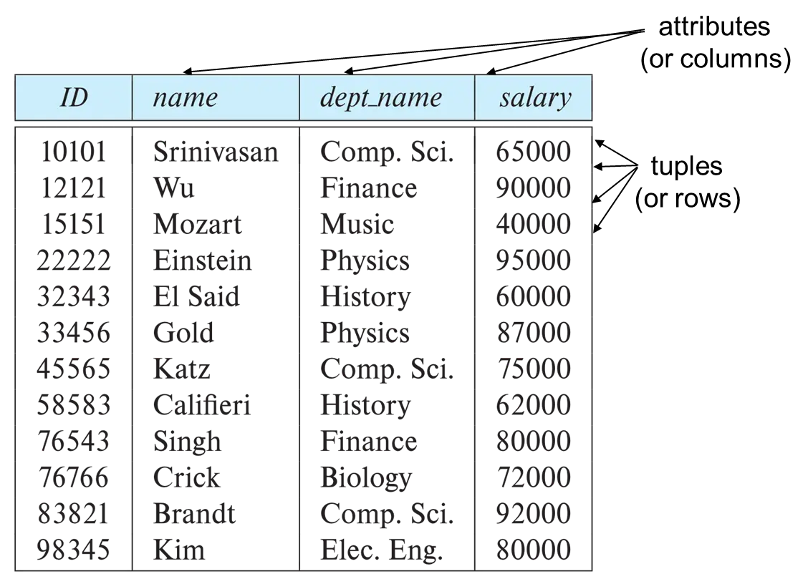
Attribute Type | 属性¶
关系的每个属性都有一个名称。每个属性允许的值的集合称为属性的域(domain)。
属性值（通常）需要是原子(atomic)的，即不可分割的
- e.g., multivalued attribute（多值属性）不具有原子性
- e.g., composite attribute（复合属性）不具有原子性
使用null来标识字段没有存储实际值（count 数据丢失，distinct数据丢失……）
Relation Schema¶
描述relation的结构。
假设\(A_1,A_2,…,A_n\)为attributes，则\(R=(A_1,A_2,…,A_n)\)是一个relation schema.
\(r(R)\)表示对于relation schema \(R\) 的一个 ralation \(r\)
- E.g.,
instructor(instructor-schema) = instructor(ID, name, dept_name, salary)
Relation Instance¶
由relation定义的表中的数据。
tuple（元组）表示表中的一行。
若 \(t\) 表示一个tuple变量，则 \(t[name]\) 表示 \(t\) 的相应属性的值。
Relation的特性¶
- 元组(tuples)的顺序是无关的（即，元组可以存储在任意的位置）。
- 关系中没有重复的元组。
- 属性值是原子的。
Key | 键/码¶
Super Key | 超码¶
对于一个关系\(r(R)\)，如果 \(R\) 的一个子集 \(K\) 足以分辨 \(r\) 中的所有不同元组，则 \(K\) 是\(R\) 的一个超码。即能够唯一标识元组的属性集，可以包含冗余属性。
- E.g.,
{ID}和{ID, name}都是关系instructor的超码。
Candidate Key | 候选码¶
最小的超码，能够唯一标识元组，但不能删除任何属性。
- E.g.,
{ID}是关系instructor的一个候选码，因为它是一个超码并且没有同为超码的更小子集。
Primary Key | 主码¶
在候选码中选出一个作为关系的主码。通常使用下划线来标识。
- e.g., classroom(building, room number, capacity)
Note
主码的值不能为null。
Foreign Key | 外码¶
假设存在两个关系 \(r\) 和 \(s\): \(r(\underline{A},B,C),s(\underline{B},C)\)，那么可以认为关系 \(r\) 中的属性 \(B\) 是一个引用(referencing) \(s\) 的外码(foreign key)，\(r\) 是一个参照/引用关系(referencing relation)，\(s\) 是一个被引用/被参照关系(referenced relation)。
- E.g., 学生(学号，姓名，性别，专业号，年龄) ---参照关系 专业(专业号，专业名称) ---被参照关系 其中属性专业号称为关系学生的外码
Note
参照关系中外码的值必须在被参照关系中实际存在, 或为null。
完整性约束¶
- Primary key constraints 主码约束：确保表中的每一行都有一个唯一标识符。
- Foreign key constraint 外码约束：确保外码字段的值必须是另一个表主码（或候选码）中的一个有效值。
- Referential integrity constraint 引用完整性约束：外码字段的值必须对应于目标表中的有效主码值。
Example¶
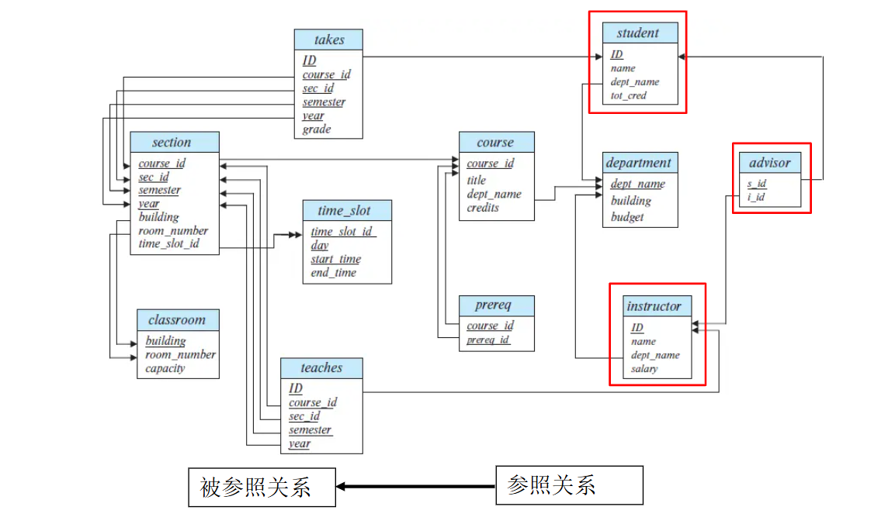
Query Languages | 查询语言¶
用户从数据库请求信息时使用的语言。
Pure query languages（纯查询语言）：使用纯查询语言执行的查询不会对数据库的状态产生任何改变，只会基于输入数据生成输出结果。
Fundamental Relational-Algebra Operations¶
Select(选择) \(\sigma\)¶
选择符合条件的tuples，即行方向选择。
表示¶
\(\sigma _p (r) = \{r| t\in r~and~p(t)\}\)
其中 \(p\) 被称为selection predicate
- 比较符： \(=,\neq,>,\geq,<,\leq\)
- 连接符：\(\wedge(and),\vee(or),\urcorner(not)\)
Example¶
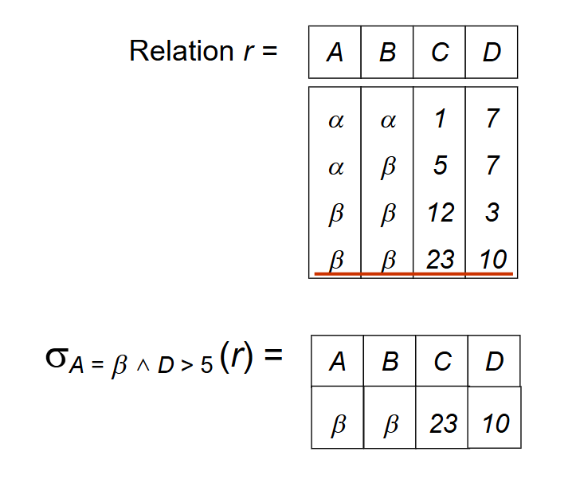
Project(投影) \(\Pi\)¶
选择关系中某几个属性的值，即列方向选择。
表示¶
\(\Pi_{A_1,A_2,…,A_k}(r)\)
其中\(A_1,A_2,…,A_k\)为属性名，\(r\)为关系名
Note
投影操作后重复的行会被删除
Example¶
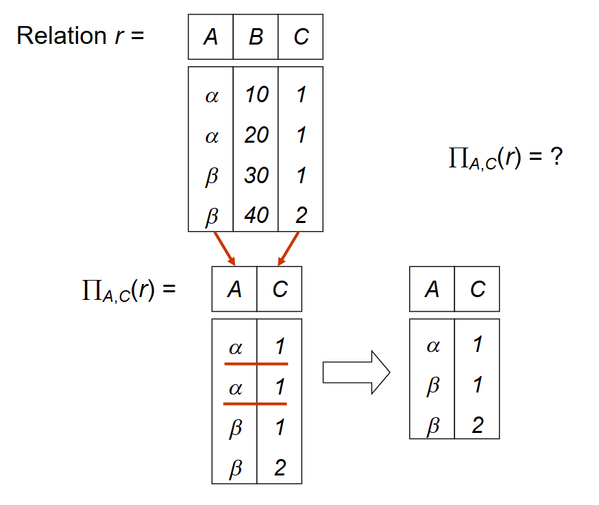
Union(并) \(\cup\)¶
用于合并两个关系。
表示¶
\(r\cup s=\{t|t\in s~or~t\in r\}\)
有效条件¶
- \(r\) 和 \(s\) 必须具有相同数量的属性
- 属性域必须兼容
Example¶
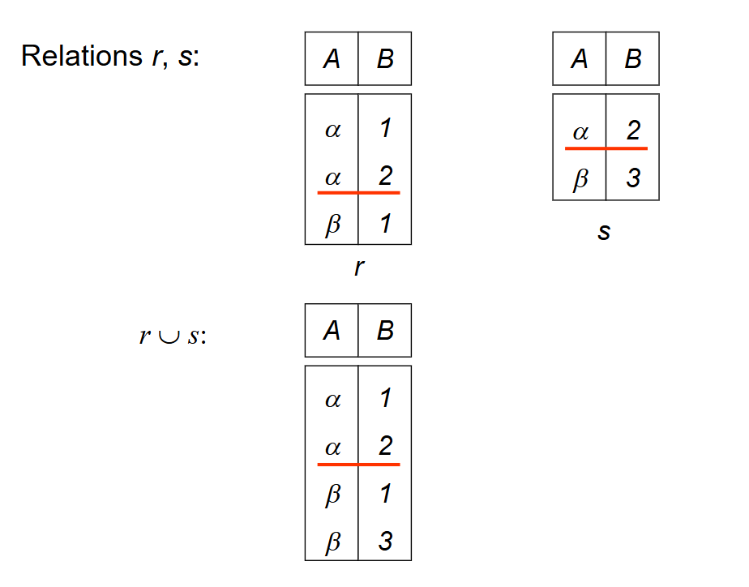
Set Difference | 差 \(-\)¶
用于查找在一个关系中但不在另一个关系中的元组。
表示¶
\(r-s=\{t|t\in r~and~t\notin s\}\)
有效条件¶
- \(r\) 和 \(s\) 必须具有相同数量的属性
- 属性域必须兼容
Example¶
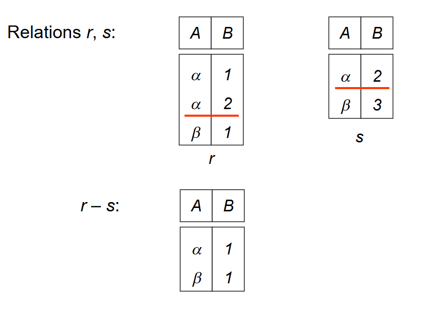
Cartesian-Product(笛卡儿积) \(\times\)¶
用于组合来自任意两个关系的信息。
表示¶
\(r\times s=\{\{t~q\}|t\in r~and~q\in s\}\)
如果 \(r\) 和 \(s\) 的属性有交集，则需要对属性进行重命名。
Example¶
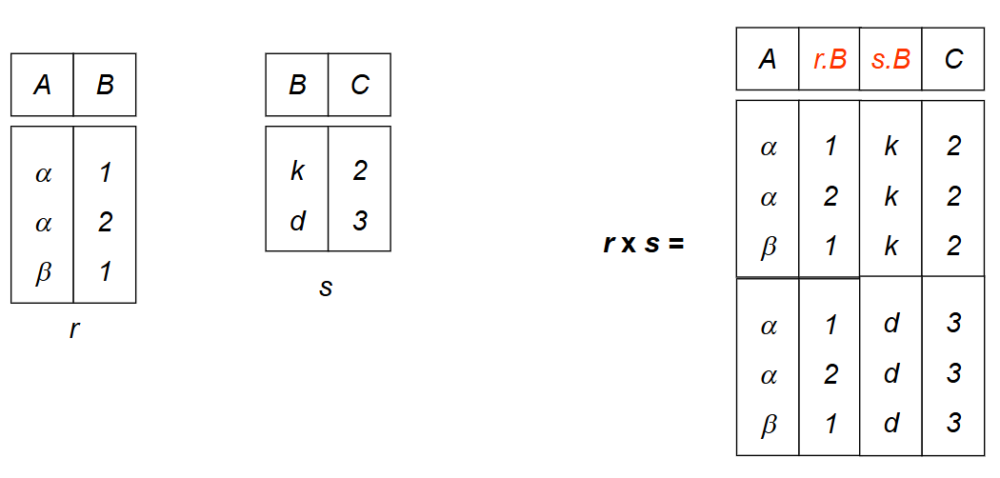
Rename(重命名) \(\rho\)¶
命名并引用关系代数表达式的结果。
表示¶
\(\rho_X(E)\) 返回命名为 \(X\) 的表达式 \(E\)。
\(\rho_{X(A_1,A_2,…,A_n)}(E)\) 对关系 \(E\) 和 \(E\) 的属性都重命名
Example¶
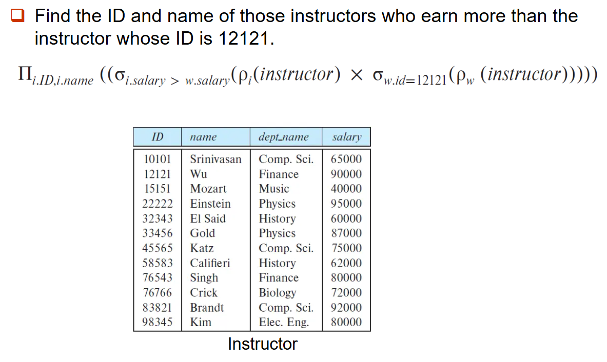
Example Queries¶
-
Example1：找出所有超过$1200的贷款。 $$ \sigma_{amount>1200}(loan) $$
-
Example2：找出每笔金额大于$1200的贷款的贷款编号。 $$ \Pi_{loan-number}(\sigma_{amount>1200}(loan)) $$
-
Example3：从银行找到所有有贷款或账户的客户的姓名，或两者兼而有之。 $$ \Pi_{customer-name}(borrower)\cup \Pi_{customer-name}(depositor) $$
-
Example4：找出所有至少在银行有贷款和账户的客户的名字。 $$ \Pi_{customer-name}(borrower)\cap \Pi_{customer-name}(depositor) $$
-
Example5：找出所有在Perryridge有贷款的客户名单 Query1： $$ \Pi_{customer-name}(\sigma_{branch-name = 'Perryridge'}(\sigma_{borrower.loan-number = loan.loan-number}(borrower\times loan))) $$ Query2： $$ \Pi_{customer-name}(\sigma_{borrower.loan-number = loan.loan-number}(borrower\times (\sigma_{branch-name = 'Perryridge'}(loan))) $$
Query2更好
loan(loan-number, branch-name, amount)
borrower(customer-name, loan-number)
depositor(customer-name, account-number)
- Example6：找出所有在Perryridge分行有贷款但在该银行任何分行都没有账户的客户的名字。 Query1: $$ \Pi_{customer-name}(\sigma_{branch-name = 'Perryridge'}(\sigma_{borrower.loan-number = loan.loan-number}(borrower\times loan))) - \Pi_{customer-name}(depositor) $$ Query2: $$ \Pi_{customer-name}(\sigma_{borrower.loan-number = loan.loan-number}(borrower\times (\sigma_{branch-name = 'Perryridge'}(loan))) - \Pi_{customer-name}(depositor) $$
Query2更好
- Example7：找到最大的账户余额
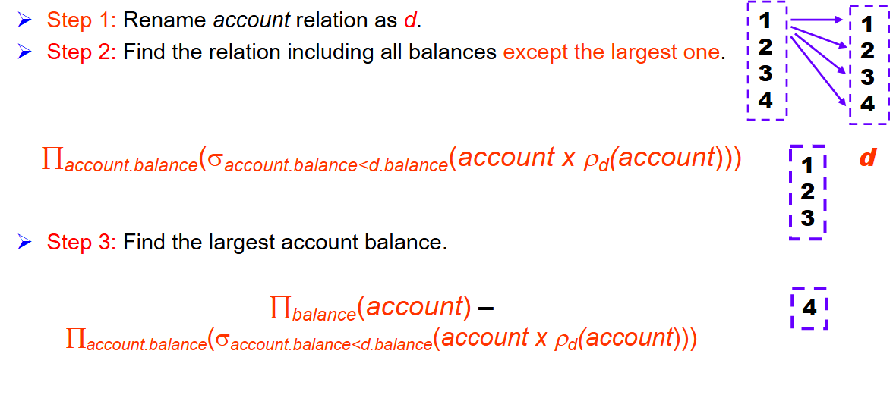
Additional Relational-Algebra Operations¶
Set-Intersection（交）\(\cap\)¶
找到同时存在于两个关系中的元组。
表示¶
\(r\cap s = \{t|t\in r~and~t\in s\}\)
Note¶
\(r\cap s = r-(r-s)\)
Join(连接) \(\bowtie\)¶
将选择操作和笛卡尔积操作合并为单个操作。
表示¶
\(t\bowtie_{\theta} s=\sigma_\theta (r\times s)\)
Example¶
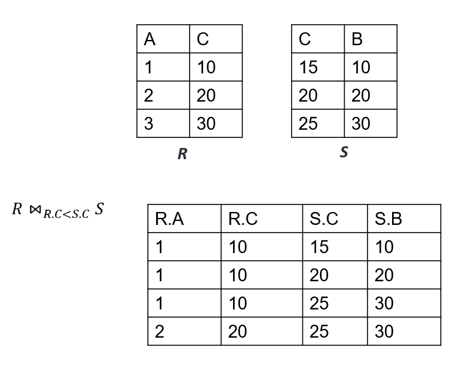
Natural Join (自然连接)¶
自然连接操作用隐式谓词替换了谓词θ，该谓词要求在左右关系的模式中出现的那些属性之间相等。
表示¶
\(r\bowtie s\)
Example¶
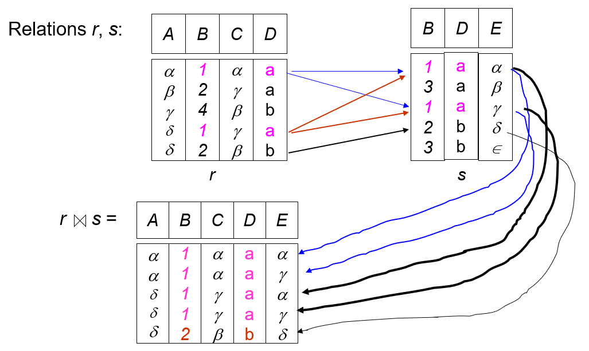
Division(除) \(\div\)¶
决定一个集合是否包含另一个集合。
表示¶
\(r\div s=\{t|t\in\Pi_{R-S}(r)\wedge[\forall u\in s,(tu\in r)]\}\)
Example¶
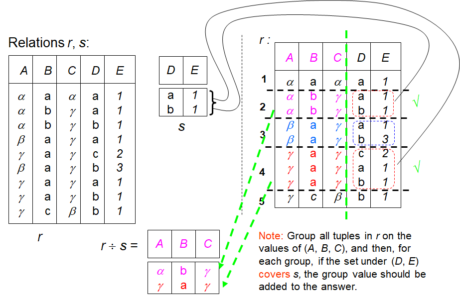
Assignment(赋值) \(\leftarrow\)¶
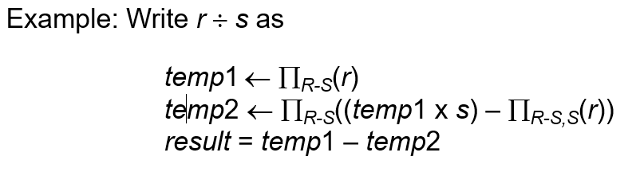
Extended Relational-Algebra Operations¶
Generalized Projection (广义投影)¶
允许在投影列表中使用算术函数来扩展投影操作。
表示¶
\(\Pi_{F1,F2,…,Fn}(E)\)
Example¶
对于关系credit_info(customer_name, limit, credit_balance)
Aggregate¶
聚合函数¶
接受一组值，并返回单个值作为结果。
-
avg: average value
-
min: minimum value
-
max: maximum value
-
sum: sum of values
-
count: number of values
表示¶
Example¶
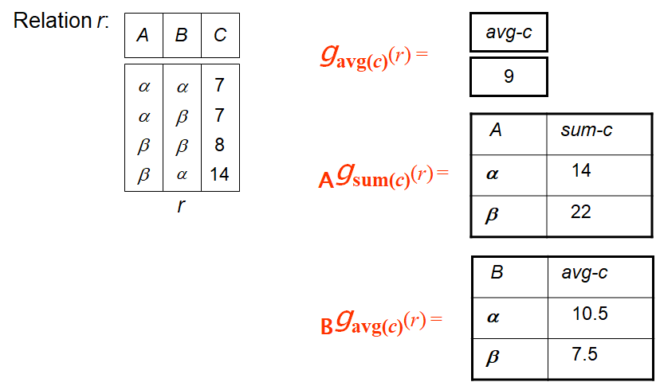
Other Join¶
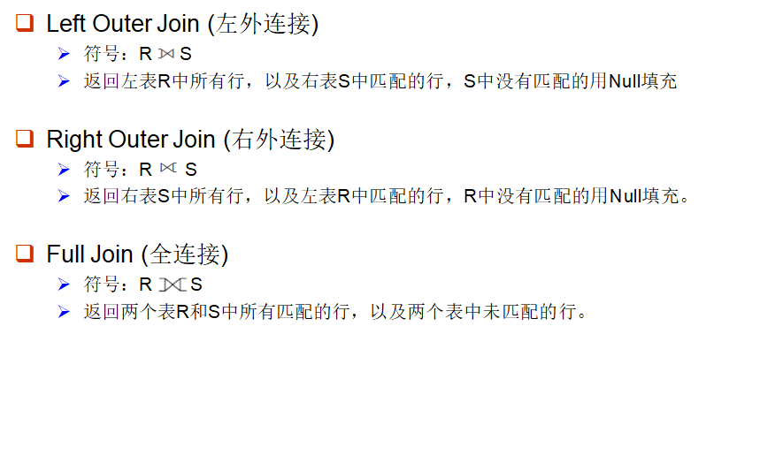
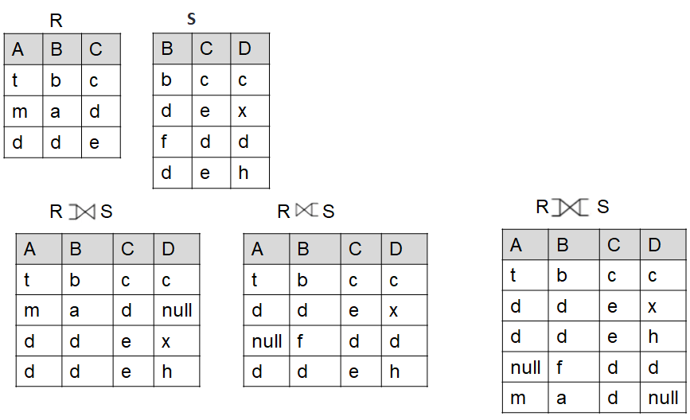
Modification of the Database¶
Deletion 删除¶
\(r\leftarrow r-E\)
Insertion 插入¶
\(r\leftarrow r\cup E\)
Updata 更新¶
\(r\leftarrow \Pi_{F1,F2,…,Fn}(r)\)